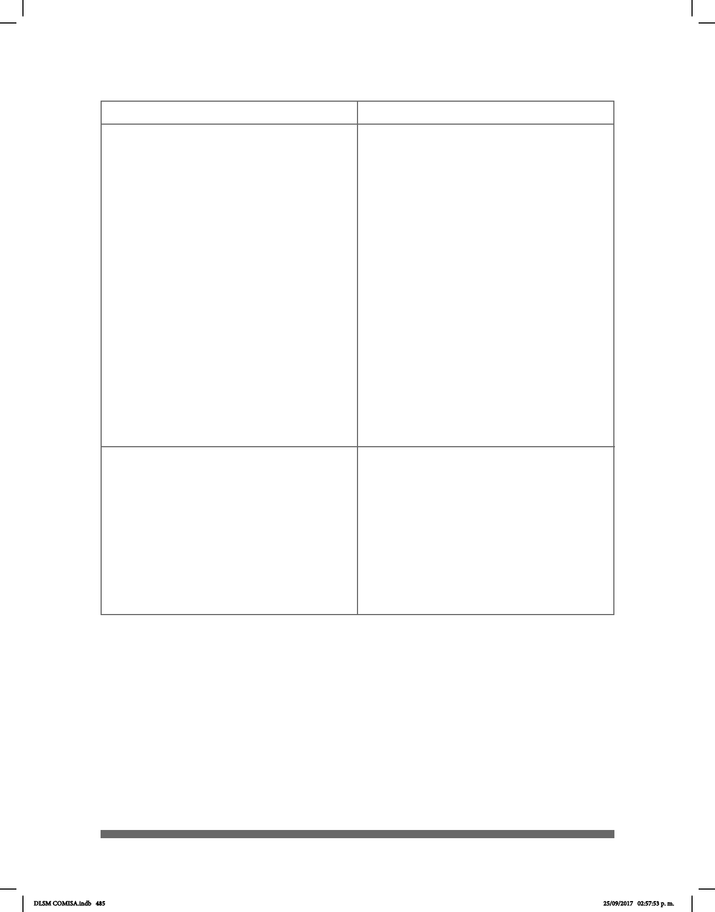

485
Estrategia 5.4. Promover acciones para la acce-
sibilidad y comunicación en instalaciones pú-
blicas de programas sociales, educación, salud,
justicia, cultura, deporte y turismo.
Líneas de Acción 5.4.8. Impulsar el uso de la
Lengua de Señas Mexicana en medios de co-
municación, en eventos públicos y espectáculos
audiovisuales.
Subprograma Accesibilidad. Meta 7.
Política Pública 7.4. Las Delegaciones,
dependencias, órganos desconcentrados y
entidades de la Administración Pública del
Distrito Federal, incluirán en los programas
anuales de capacitación para servidores
públicos cursos relacionados con el uso de
tecnologías, de formatos accesibles (sonoros,
Braille y pictogramas), así como de la Lengua
de Señas Mexicana, sobre todo para el personal
de las áreas de atención ciudadana y acceso
a la información pública, a n de hacer ecaz la
comunicación entre el gobierno de la ciudad y
las Personas con Discapacidad que la habitan o
transitan.
Extendiendo la invitación a sumarse a esta
acción a la Asamblea Legislativa del
Distrito Federal y el Tribunal Superior de Justicia
del Distrito Federal.
Política Pública 7.7. INDEPEDI buscará que
el Canal de Televisión del Gobierno del Distrito
Federal, cuente con subtítulos y que los
noticieros tengan intérprete de lengua de señas
mexicana.
Subprograma Sensibilización: no discriminación e
inclusión social.
Meta 3. Política Pública 3.3. Las
Delegaciones, dependencias, órganos
desconcentrados y entidades de la
Administración Pública del Distrito Federal
buscarán la participación de intérpretes de
Lengua de Señas Mexicana (LSM) en
campañas, eventos públicos. Extendiendo la
invitación a sumarse a esta acción a la
Asamblea Legislativa del Distrito Federal y el Tribunal
Superior de Justicia del Distrito Federal.
Nacional
Local (CDMX)
DLSM COMISA.indb 485 25/09/2017 02:57:53 p. m.